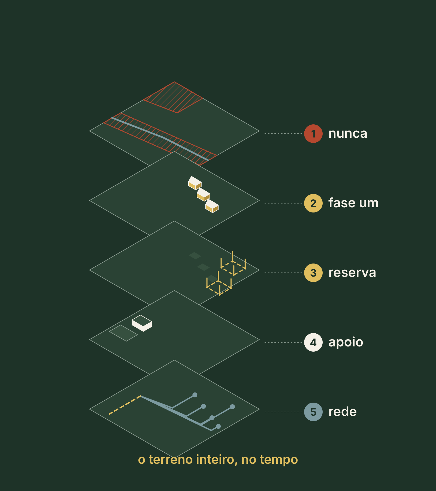
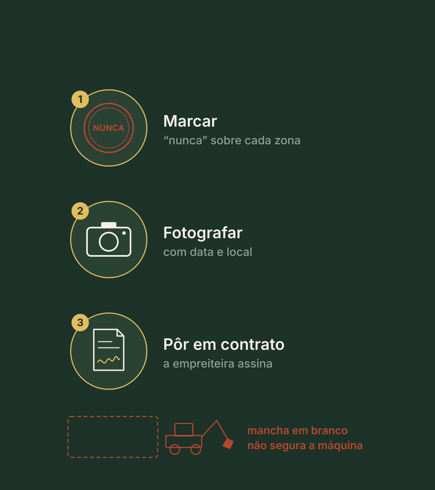
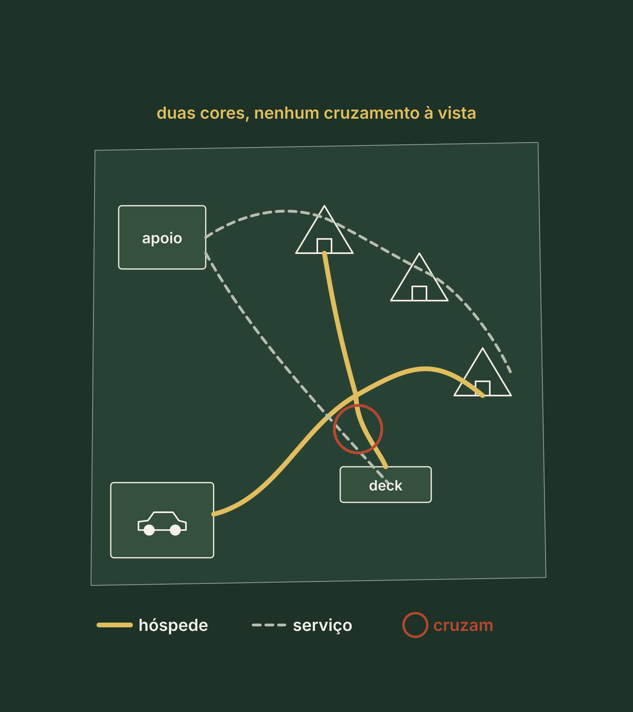
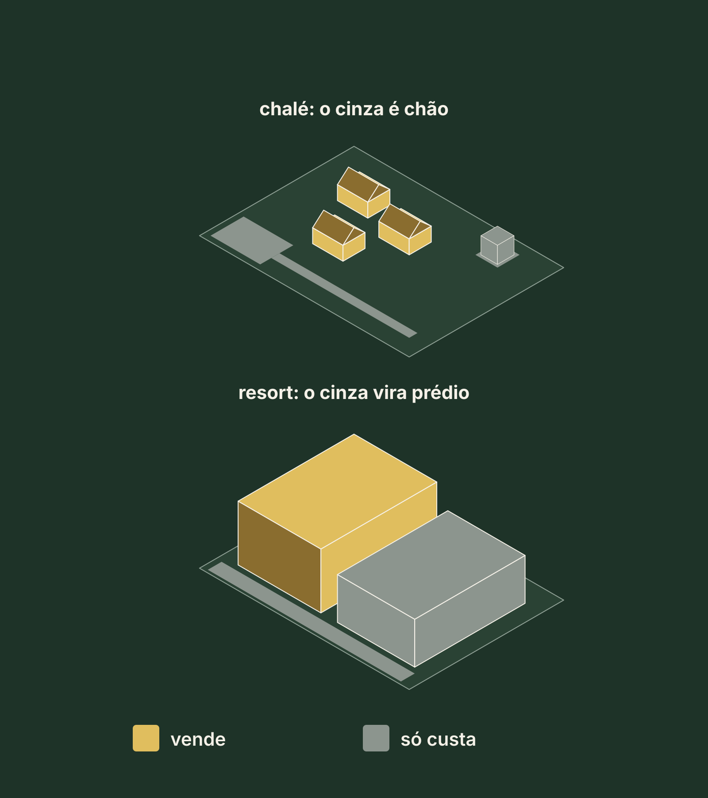
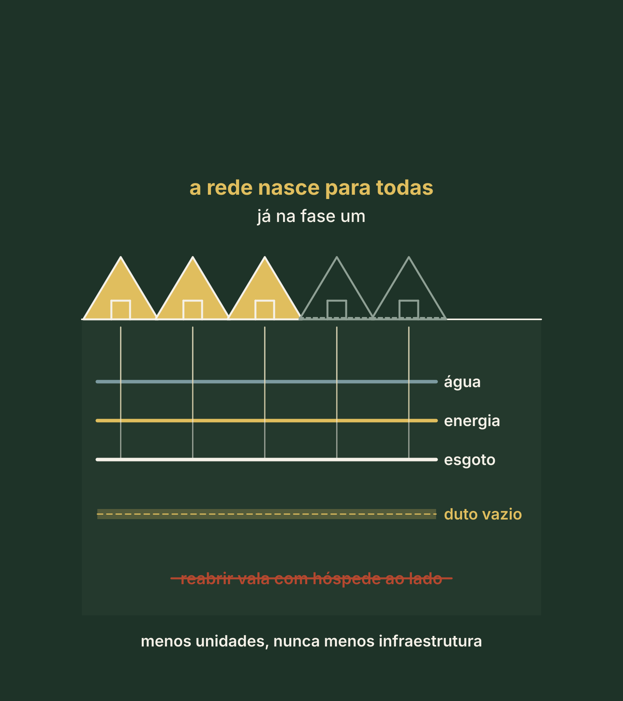

Método Zion · Etapa 3 · Desenhar o terreno
Pilar 5
Masterplan faseado
O terreno inteiro no papel: o que nunca se constrói, o que precisa existir, o que cabe, o que se vende e o que entra primeiro.
Ao fim desta aula
O que você vai saber, e a página que vai gerar
- Onde você nunca vai construir, e por quê: lei ou produto.
- O que precisa existir: o programa e a conta do apoio.
- Onde fica cada coisa, em duas cores, conferido a pé.
- O que cabe, o que se vende e o que entra na fase um.
- Quando a fase dois pode começar.
A página 5 do seu Dossiê
O Masterplan faseado em PDF: a ocupação do terreno, a conta do apoio, o vendável, a rede, o gatilho da fase dois, os alertas e o próximo passo.
O que você vai fazer aqui
Assistir, responder e sair com a página 5
Assistir
Dois vídeos curtos, um por bloco. Eles aparecem aqui dentro, no ponto certo.
Responder
Uma pergunta por tela, logo depois do trecho que a explica. Cada resposta fica salva na hora, neste aparelho.
Gerar a página
No fim, a ferramenta do Masterplan abre aqui dentro, já com as suas respostas, e você baixa a página 5 em PDF.
DicaTenha à mão o mapa do terreno, uma caneta vermelha, uma de outra cor e as páginas dos pilares anteriores. Use os botões lá embaixo, ou as setas do teclado, para avançar.
Vídeo 1 de 2 · Bloco 1 · O masterplan, onde nunca e o que precisa existir
Hoje, três perguntas
O que se constrói, onde fica cada coisa e o que entra primeiro
O desenho de uma cabana
Se corrige em semanas.
O lugar dela no terreno
Não se corrige nunca.
Uma crença que parece prudente
"Não entendo de projeto, o arquiteto resolve"
- Ele resolve, sim, o que recebe.
- Sem critérios escritos, sobra um só: o mais barato de construir.
- O ponto plano, perto da estrada.
Quiz relâmpago · clique numa resposta
O arquiteto recebe só o terreno, sem nenhum critério escrito. Que critério sobra para ele decidir?
Ele resolve o que recebe. Sem critérios escritos, sobra um só: o mais barato de construir. Por isso as regras são suas, e vêm antes do desenho.
Masterplan quer dizer plano mestre
O terreno inteiro no tempo
Não é a planta de uma cabana. Nele cabem cinco coisas:
- O que nunca será construído
- A fase um, o que abre primeiro
- A reserva da fase dois
- O apoio
- A rede de água, energia e esgoto

Nesta etapa, ele é orientativo
Um rascunho à mão, com as regras escritas
- Sem escala, com as decisões e os motivos escritos. Você não precisa saber desenhar.
- O desenho fino é do arquiteto. As regras são suas.
- Ninguém orça um terreno: orça-se a lista que sai do masterplan.
ImportanteO masterplan desta aula é orientativo. O projeto de verdade é feito por um arquiteto contratado por você, com o topógrafo e os profissionais que ele indicar.
Ele nasce do modelo que você escolheu no Pilar 4
Cada modelo pede um desenho diferente
| Modelo | O que o desenho precisa mostrar |
|---|---|
| Venda | Quantas unidades cabem e a área de cada uma |
| Renda | Quantas vendem noites e o apoio para operar |
Passo 1 · Volte ao terreno com o mapa e uma caneta vermelha
Antes de decidir onde construir, decida onde jamais vai construir.
Lei
Comece pelo que a lei protege: a área de preservação, como a margem do rio e a nascente, e a reserva legal, a parte do imóvel rural que fica com mata nativa. Quem confirma é o técnico ambiental.
Produto
Depois, o que o seu produto precisa: o bosque que segura o vento, a vista, a crista. A lei não pede, mas é o que você vende, e derrubado não volta.
E uma regra que vale ouro
O melhor ponto de vista fica só para as unidades, nunca para a caixa d'água.
Uma mancha em branco no desenho não segura uma máquina
O nunca só existe com três gestos
- Marcar "nunca será construído" sobre cada zona.
- Fotografar o terreno com data, antes da primeira máquina.
- Pôr em contrato, numa cláusula que a empreiteira assina. Quem redige é o advogado.

Quiz relâmpago · clique numa resposta
Você deixou o bosque em branco no desenho. Isso protege o bosque na obra?
Uma mancha em branco no desenho não segura uma máquina. São três gestos: marcar, fotografar com data e pôr numa cláusula que a empreiteira assina, redigida pelo advogado.
O nunca da Marina
| Pintado de vermelho | Motivo |
|---|---|
| A área de preservação | Lei |
| A reserva legal | Lei |
| Os dois bosques | Produto |
| A crista | Produto |
A área nunca foi o limite. O limite é o mercado e o silêncio que ela vende.
Passo 2 · O que precisa existir
O programa: a lista de tudo, em quatro áreas
Hospedagem
As unidades que você vende.
Convivência
O que os hóspedes usam juntos.
Apoio
O que faz a operação funcionar fora da vista.
Infraestrutura
Água, energia, esgoto e acesso.
Um ambiente por linha: quem usa, quando, e de que precisa estar perto ou longe.
O que todo mundo esquece
O apoio, fora da vista
- É o que faz a operação funcionar: rouparia, depósito, copa da equipe e o lugar do lixo.
- O ponto de partida do método: de 15% a 25% da área fechada.
- Área fechada é a de dentro, com parede e telhado. O deck fica fora.
Quiz relâmpago · clique numa resposta
Na conta do apoio, o deck entra na área fechada?
A régua do apoio usa a área fechada: o interior com parede e telhado. O deck fica fora da conta, mas ocupa chão, e entra quando você mede quanto o desenho ocupa.
A conta do apoio da Marina
Com cinco cabanas, os mesmos 30 m² ficariam abaixo de 15%. Então ela já prepara a ampliação para 34 m².
Mexa você · a régua do apoio
Começa no exemplo da MarinaE quando forem cinco cabanas?
Um teste no papel
Hora a hora, o dia em que um hóspede sai e outro chega
- A cesta do café
- A limpeza
- O lençol
- O lixo
- A chegada
À uma da tarde, chegou a van que leva o lençol. Onde ela para? Não tinha vaga de serviço. Agora tem.
AtençãoEsquecer um ambiente custa, depois da obra, cerca de dez vezes mais.
Antes do bloco dois · a sua lição
O seu nunca e o seu programa
Pinte de vermelho o seu nunca, com o motivo, lei ou produto. Faça as quatro listas do programa e a conta do apoio. Onde aparece "não sei", é tarefa da semana.
Vídeo 2 de 2 · Bloco 2 · O que cabe, o que se vende e a fase um
Passo 3 · Onde fica cada coisa
Uma ordem que contraria o instinto
- Primeiro, o nunca.
- Os melhores pontos de vista, só para as unidades.
- O caminho do hóspede.
- As unidades.
- A convivência.
- O apoio, com acesso próprio.
- Por último, a infraestrutura pesada.
Quiz relâmpago · clique numa resposta
Na ordem do masterplan, o que você decide primeiro?
Primeiro o nunca. Depois os melhores pontos de vista, só para as unidades. A infraestrutura pesada vem por último.
No mapa, duas canetas
O hóspede numa cor, o serviço em outra
- Desenhe o caminho do hóspede numa cor e o do serviço em outra.
- Circule cada ponto em que eles se cruzam ou se veem.
- Cada círculo é um problema para resolver agora, no papel.

Depois, confira a pé
Quatro estacas e barbante
- Marque cada unidade com quatro estacas e barbante.
- Fique onde seriam a cama e a janela, às sete da manhã e às cinco da tarde.
A MarinaDa janela da cabana 3 se via o deck da 2. A 3 desceu uns 15 metros. Custo da correção: quatro estacas.

Passo 4 · O que cabe · o estudo de massas
Caixas de papelão sobre a planta
Testar o volume que cabe no terreno antes de desenhar cada unidade. Primeiro, o que a prefeitura permite: o plano diretor põe números no seu lote.
| O número | O nome que a prefeitura usa |
|---|---|
| Quanto do chão pode ser coberto | Taxa de ocupação |
| Quanto se constrói somando os andares | Coeficiente de aproveitamento |
| O espaço livre em volta e o teto | Recuos e altura máxima |
Você não calculaPede à prefeitura, por escrito, e entrega ao arquiteto.
O número da lei é um teto, não uma meta
E nem sempre cabe no chão
- A encosta forte, a preservação, os recuos, a distância entre as unidades e o seu nunca também tiram volume.
- Por isso o estudo de massas vem depois do nunca.
Quem manda não é o índice. É o mercado, que no Pilar 2 disse: cabem três.
Mexa você · o teto e o chão
Começa no exemplo da MarinaQuanto do terreno o desenho ocupa?
Caminhos, estacionamento e convivência ao ar livre ficam fora desta conta. As barras são para testar: o que vai para a página 5 são as suas respostas.
Quiz relâmpago · clique numa resposta
A prefeitura permite muito mais do que você vai construir. O número da lei é...
O número da lei é um teto, não uma meta. Na Marina, quem manda é o mercado, que no Pilar 2 disse: cabem três.
Passo 5 · O que se vende
Todo empreendimento tem duas áreas
Vendável
Gera receita: é a unidade, vendida pela diária, pela fração ou inteira.
Não vendável
Estacionamento, caminho e apoio. Também custa, mas ninguém paga por ela separado.
Como no Pilar 4: a obra custa tudo, e a venda só paga a área vendável.

Quanto maior o projeto, mais pesa o que não se vende
No chalé, chão. No resort, prédio.
No chalé pequeno
Quase todo o não vendável é chão: caminho e vaga.
No resort
Vira prédio, com obra, móveis, equipe e manutenção.
Quiz relâmpago · clique numa resposta
Cerca de 79% da área fechada da Marina é vendável. Isso quer dizer que o negócio fecha?
Esse número alto não diz se o negócio fecha. Em unidades espalhadas, quase todo o não vendável é chão. Quem diz se fecha é a conta do Pilar 6.
Passo 6 · A fase um, o que abre primeiro
Construa menos unidades, nunca menos infraestrutura.
- A rede de água, energia e esgoto se faz para o projeto completo, já na fase um.
- Com um duto vazio, para passar cabo depois.
- Senão, na fase dois, você reabre vala com hóspede ao lado.
Quem diz o tamanho é o projetista, e a energia, a concessionária.

O que fica para depois tem lugar, e o que entra agora tem lista
Guarde a fase dois e congele a fase um
A reserva
Guarde a área da fase dois com estacas e placa, para não virar estacionamento ou canteiro.
O escopo congelado
Três listas: o que entra, o que espera e o que nunca entra.
Quando começa a fase dois? Não depois de um feriado cheio.
O gatilho: três condições que acendem juntas
Demanda
Doze meses de reservas reais.
Caixa
A sua parte e três meses de custo fixo guardados.
Maturidade
Processos escritos e equipe estável.
Escreva antes. Um feriado lotado é um dado, não doze meses.
Quiz relâmpago · clique numa resposta
Um feriado lotou as três cabanas. É hora da fase dois?
Um feriado lotado é um dado, não doze meses. E ainda faltariam o caixa e a maturidade.
Abre com três, desenha tudo para cinco
A rede
Feita para as cinco já na fase um.
O apoio preparado
30 m² agora, com a ampliação para 34 m² pronta para vir.
A reserva marcada
O lugar da fase dois, guardado com estacas e placa.
Os números do gatilho, ela fecha no Pilar 6.
O Pilar 5 em cinco frases
O que fica
- Masterplan é o terreno inteiro no tempo: o nunca, a fase um, a reserva, o apoio e a rede.
- Antes de onde construir, onde jamais construir: lei ou produto, com três gestos.
- O programa tem quatro áreas, e o apoio fica entre 15% e 25% da área fechada.
- O número da lei é teto, não meta, e só a área vendável gera receita.
- Menos unidades, nunca menos infraestrutura. A fase dois espera o gatilho.
LembreO masterplan é orientativo. O projeto de verdade é feito por um arquiteto contratado por você, com o topógrafo e os profissionais que ele indicar.
Para a página 5 sair com o seu nome
Quem é você e onde fica o terreno
Fica salvo neste aparelho. Se você já preencheu em outro pilar, os dados vieram de lá: confira.
Diagnóstico · aqui mesmo, sem sair da aula
As suas respostas já estão aqui. Confira, gere o resultado e baixe a página 5 do seu Dossiê. No fim, envie para o Land Bank da Zion.
Próximo · Pilar 6
Pré-viabilidade
Quanto custa o projeto inteiro, a conta, os três cenários e o tempo de volta. A coluna "Entra" do seu escopo é o que vai ser orçado.
Um projeto assim é o que um sócio, um banco ou a Zion conseguem avaliar. E a Zion avalia cada caso.
LembreteSalve o PDF na pasta Meu Dossiê.
Conteúdo educacional. A Marina é um exemplo ilustrativo e as contas são só de área. O masterplan desta aula é orientativo: o projeto de verdade é feito por um arquiteto contratado por você, com o topógrafo e os profissionais que ele indicar. Preservação, reserva legal, índices, redes e contratos aparecem em nível introdutório: quem confirma é o advogado, o contador ou o cartório, o órgão ambiental ou a prefeitura. Não é projeto nem oferta de investimento, e não é promessa de renda, retorno, ocupação, crédito, compra ou sociedade. A Zion avalia cada caso.